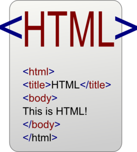

HTML(HyperText Markup Language) este un limbaj de marcare utilizat pentru a crea pagini web.
Un exemplu de cod html il gasiti in imaginea urmatoare care se afla la adresa urmatoare
Imaginea are atributul de height de valoare 147.
Tag-urile html cele mai utilizate in realizarea tabelelor sunt:
| table | defineste un tabel |
|---|---|
| tr | un rand intr-un tabel |
| td | O celula intr-un tabel |
Observatie: Pentru a pune contur unui tabel se poate(dar nu se recomanda) sa se puna atributul border="1".
La validare va da eroarea:The border attribute on the table element is obsolete.
Formularele se pot crea cu ajutorul tag-ului form care poate contine tagurile:input,textarea,label,select,option,button.
Pentru mai multe detalii consultati cursul sau tutorialul de la adresa.
Un exemplu pentru un formular este:
Pentru a crea liste se pot folosi tagurile:
Astfel,exemplul de mai jos insereaza continutul de la adresa https://html.spec.whatwg.org/multipage/